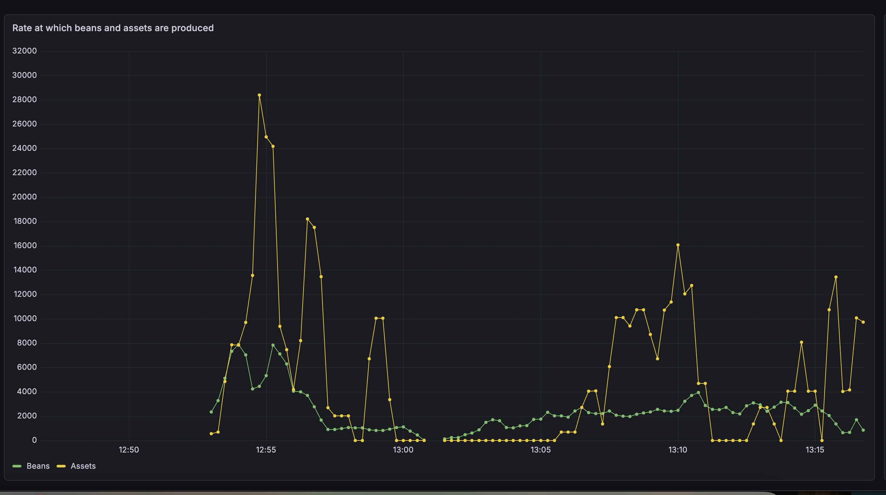
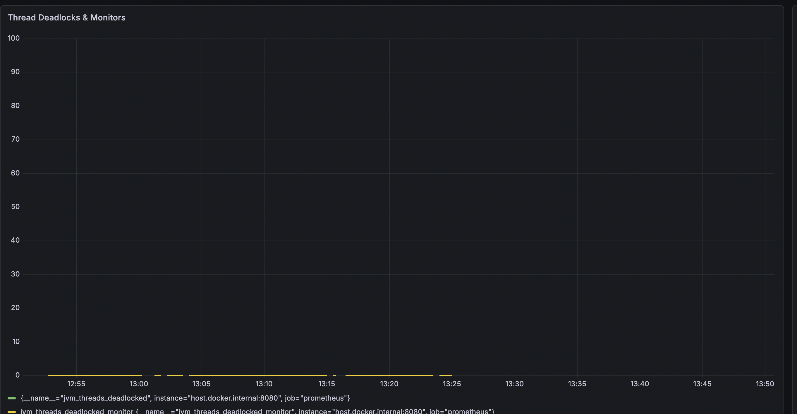
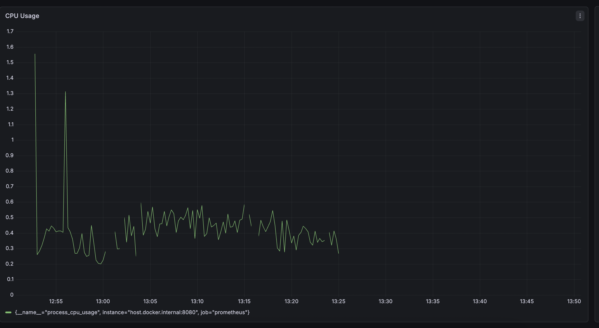

Title
Enchanment in freshJoin works to support for creating assets which could be the combination of two or more other assets.
Abstract
Currently, assets are created through beans. If I want to create an asset say AssetA from bean BeanA then
I can simply have a method setFromBean(com.freshworks.Beans.BeanA beanA) and set the properties.
Now suppose I would like to create an asset which is combination of two beans for example, I have an asset AssetCombined which should be have attributes of two beans BeanA and BeanB then I can use FreshJoin and join these two beans on some common key and have two methods setFromBean(com.freshworks.Beans.BeanA beanA) and setFromBean(com.freshworks.Beans.BeanB beanB)
Now suppose I would like to create an asset which is combination of three or more beans for example, I have an asset AssetMultipleCombined which should have attributes of three beans BeanA , BeanB and BeanC then in this case I do not have any direct way using FreshJoin as FreshJoin supports join of two beans.
Hagrid try to provide this feature by using this logic.
1. First create an intermediate asset by joining two beans BeanA and BeanB using FreshJoin.
2. Override a method named publishAsBean of this asset to true. If notify Hagrid to NOT to publish this asset into publisher_list rather publish this asset as a bean into processor_queue.
3. When processorService will consume this so called bean then it can be used to create actual asset by joining with BeanC
Problems with Above approach 1. We can not publish asset as an bean because every bean has its parent associated with it. In this kind of bean, it will lost its parent and may break the integrity of the system and may cause unexpected issues 2. Even if we add the parent to this bean, then which parent should we add as this asset is created using two beans.
Given above drawbacks, above approach of publishing asset an a bean is not right.
Proposed Solution
My proposed solution is following
1. Use freshJoin to join two or more assets instead of beans
2. Let developer create assets of each associated beans. For example if there is bean BeanA and BeanB then developer should create asset AssetA from BeanA and AssetB from BeanB
3. Developer can create an asset by combining other assets like AssetA and AssetB to create AssetC
4. Hence freshJoin should work on assets instead of beans
By changing the way freshJoin works ( instead of beans, join with assets ), we can write a service, which will consume geneated assets and check if there is any asset which depends on this asset ( in freshjoin ). If so then we can proceed as we do today.
This approach will be rid of the two drawbacks listed above away which are
1. Keeping sanity of beans intact i.e each bean MUST be traced back to which parent has generated it.
2. There wont be any issue of multiple parents as freshJoin will have assets instead of beans
Table of Contents
- Title
- Abstract
- Table of Contents
- Introduction
- Goals and Requirements
- Proposed Specification
- Use Cases
- Design Overview
- Detailed Design
- Compatibility
- Impact
- Alternatives
- Testing
- Reference Implementation
- Contributors
- Schedule
- Appendices
Introduction
Currently, assets are created through beans. If I want to create an asset say AssetA from bean BeanA then
I can simply have a method setFromBean(com.freshworks.Beans.BeanA beanA) and set the properties.
Now suppose I would like to create an asset which is combination of two beans for example, I have an asset AssetCombined which should be have attributes of two beans BeanA and BeanB then I can use FreshJoin and join these two beans on some common key and have two methods setFromBean(com.freshworks.Beans.BeanA beanA) and setFromBean(com.freshworks.Beans.BeanB beanB)
Now suppose I would like to create an asset which is combination of three or more beans for example, I have an asset AssetMultipleCombined which should have attributes of three beans BeanA , BeanB and BeanC then in this case I do not have any direct way using FreshJoin as FreshJoin supports join of two beans.
Hagrid try to provide this feature by using this logic.
1. First create an intermediate asset by joining two beans BeanA and BeanB using FreshJoin.
2. Override a method named publishAsBean of this asset to true. If notify Hagrid to NOT to publish this asset into publisher_list rather publish this asset as a bean into processor_queue.
3. When processorService will consume this so called bean then it can be used to create actual asset by joining with BeanC
Problems with Above approach 1. We can not publish asset as an bean because every bean has its parent associated with it. In this kind of bean, it will lost its parent and may break the integrity of the system and may cause unexpected issues 2. Even if we add the parent to this bean, then which parent should we add as this asset is created using two beans.
Given above drawbacks, above approach of publishing asset an a bean is not right.
Hence we need a solution which can work without compormising the integrity of the system and works within the current system design
Goals and Requirements
I have the following goals for this DSR
Product Goals
- Allow developers to create assets which should be created by combining other multiple assets.
Technical Goals
- Changes should be limited to ProcessorService and its sub-components
- Correctly determining the performance impact of this feature.
- Updating the customer document to enable them on how to use this feature
Proposed Specification
I propose following specifications to make this feature work
Product Specification
New asset definition will look like below.
@FreshJoin('rightClass'= AssetA.class, 'rightClassFieldName' = 'id', 'leftClass' = AssetB.class, 'leftClassFieldName' = 'user_id')
public class combinedAsset extends AbstractAsset{
String name;
String company;
public void setFromAsset(AssetA assetA){
this.name = assetA.getName();
}
public void setFromAsset(AssetB assetB){
this.company = assetB.getCompanyName();
}
}
Technical Specification
Make following changes in ProcessorTaskService
1. Consume Bean from processor-queue
2. Check if any asset can be created from this bean.
1. If Yes then create an asset and publish it then
1. Check if any other asset depends on this newly created asset
2. If yes then create more assets and publish them
3. Continue this process until no more assets can be created
2. If no then continue as it is happening today.
Use Cases
Following are the possible usecases
Primitive Asset Usecase
Primitive asset usecases are the cases where assets are created from beans and there are no asset which is made from join of other two primitive assets
public class AssetA extends AbstractAsset{
String id;
String name;
String company;
public void setFromBean(BeanA beanA){
this.name = beanA.getName();
}
public void setFromBean(BeanA beanA){
this.company = beanA.getCompanyName();
}
public void transform(){
this.id = "_" + this.name + "_;
}
}
public class AssetB extends AbstractAsset{
String user_id
String department;
String designation;
public void setFromBean(BeanA beanB){
this.department = beanB.getDepartment();
}
public void setFromBean(BeanA beanB){
this.designation = beanB.getDesignation();
}
}
In above use case, I have created two primitive assets AssetA and AssetB.
Non Primitive Asset Usecase
Non primitive asset usecases are the cases where an asset is created by the combination of two or more other assets
@FreshJoin('rightClass'= AssetA.class, 'rightClassFieldName' = 'id', 'leftClass' = AssetB.class, 'leftClassFieldName' = 'user_id')
public class combinedAsset extends AbstractAsset{
String name;
String company;
public void setFromAsset(AssetA assetA){
this.name = assetA.getName();
}
public void setFromAsset(AssetB assetB){
this.company = assetB.getCompanyName();
}
}
Design Overview
I am suggesting that we should modify ProcessorTask.java in the following way
1. [ADD] create a asset queue like global_asset_creation_queue
2. [CONTINUE] Process each Bean and convert them into Assets - It is happening today as well. Push these primitive assets into this global_asset_creation_queue
3. [ADD] Once done then Write and call a method lets say createNonPrimitiveAssets which will generate new non primitive assets from the assets in this queue
4. [ADD] Again the newly created non primitive assets should be published back into global_asset_creation_queue so that is any more assets can be created
5. This process will continue until the queue global_asset_creation_queue become empty
Detailed Design
In this section, I am going to describe on how we can create non primitive assets from other assets.
Basic algorithm that I have followed is like this
- In
ProcessorTaskService - When
beanis received then create allprimitive assetsfrom it. - Collect all these
primitiveassets inLinkedListsayabstractAssetList - Loop through each
assetin this list and createnon primitive assets - Each newly created
non primitive assetshould be added back toLinkedListabstractAssetList - Keep doing this until
abstractAssetList.isEmpty()istrue
abstractAssetList.clear();
for (String bean : itemList) {
if (Boolean.FALSE.equals(Thread.interrupted())) {
// Processing primitive Assets first.
abstractAssetList = processBeanForAsset(bean);
while(true) {
if (abstractAssetList.isEmpty()){
break;
}
// Processing non primitive Assets
processAssetForAsset(abstractAssetList.pop());
}
} else {
// If thread is interrupted or asked to terminate then skip the list and publish
// whatever assets are generated
break;
}
}
Hence the creation of the assets from bean say bean1 will follow this protocol
flowchart TD
B[Bean 1] --> A1[A1]
B --> A2[A2]
A1 --> A11[A11]
A2 --> A21[A21]In the above diagram, following process is being demonstrated
- Bean
bean 1will generate two assetsA1andA2. These assets will beappendedto theabstractAssetList - State of
abstractAssetListis[A1, A2] - Next, Asset
A1will be process, which will produceA11 - State of
abstractAssetListis[A2, A11] - Next, Asset
A2will be process, which will produceA21 - State of
abstractAssetListis[A11, A21]
As you can see from above algorithm, assets will be processed in BFS order. Hence if an asset is formed by joining two assets at the same level then it will be created immediately ( because of BFS)
Compatibility
This feature will not be backward compatible out of the box because
*Earlier freshJoin used to work with AbstractBeans , however now freshJoin will work with AbstractAssets *
However, if customer want to migrate to this feature then they can simple convert their assets into this new way. If they do so then their connectors will keep on working
Impact
Customer Impact
As we are relasing Hagrid 5.0.0 then we can include this feature into this version. Any new customer can use this feature easily
Technical Impact
There would be impact on Processor Module of Hagrid. In Processor Module , we have to do following things
1. Introduce a new service AssetAssetDependencyService which will contains mapping for dependency of assets to assets. Basically this dependency is like AssetBeanDependencyService .
2. Changes in ProcessorTask.java service to create non primitive assets for a given primitive asset.
3. Changes in AbstractJoinService , LeftJoinService and InnerJoinService to create non primitive assets from a given asset.
Performance Impact
I have done the performance testing with this feature and results seems good with no performance impact on the Hagrid.
Here are the screenshots of the same.
Screenshot for Rate of Bean vs Asset

Screenshot for JVM Deadlock

Screenshot for CPU Usage

Documentation Impact
We need to change at the following areas in documentation
Use Case
- Introduce
primitiveandnon primitiveassets - Show case use case of them
General
- Where ever we have referred
@freshJointhere documentation needs to be updated to reflect this new process
Alternatives
Alternative that I thought of was like below ( which is described in introduction as well )
Main idea was how do we enable customer to join two or more asset and let them create complex asset types
We can achieve the same with this alternative however it has many caveats
1. Let freshJoin be joined on beans instead of assets
2. To create an assets which is the combination from two beans say bean1 and bean2, we can use freshJoin
3. Now to create an asset which should be create from this asset ( created in step 2) and another bean like bean3 , we were thinking of providing a method named publishAssetAsBean which will be an asset as bean. Essentially it will serialize this asset into another bean say bean4 (which should be already defined by the developer) and publish in processor queue.
4. Developer now can create an asset by joining bean3 and bean4
Problems with this idea
There are multiple drawbacks of this alternative
1. Developer has to create a bean (like bean3 in above process) in which this asset can be rendered into
2. As per the idea of beans, every bean must have parent from which it is created. If we convert an asset into bean then we are losing that tracking. Which essentially breaks the principle idea of a bean.
Hence considering above drawbacks, we decided not to go with this approach.
Testing
Plans for testing the specification.
1. I have added test cases in processor join package.
2. I have tested it for the performance impact as well.
Reference Implementation
I am doing the POC in this branch https://github.com/freshworks-oss/hagrid-oss/tree/dsr18/feature
Contributors
List of individuals and organizations involved in the proposals.
- Amit Aggarwal - amit.aggarwal@freshworks.com
Schedule
Timeline for the development and release of the specification.
Appendices
Additional information, such as glossary, references, or related documents.